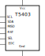

Inkscape New Part

Useful Tips:
- Tab Object > Objects shows that the layers of the objects
- Create shape, then double click the color block at the bottom to choose the color fill or stroke
- Change size, by Object > Transform or Ctrl+Shift+M
- Change Font Size or Style, by Text > Text and Font or Ctrl+Shift+T
- Align Objects, by Ctrl+Shift+A
Steps:
- Open Fritzing, choose ICs component.
- Change pin number.
- Right click the component to create new part.
- Edit breadboard, pcb and schematic one by one. (It is weird that I cannot edit pcb successfully.)
References
- Fritzing template
- My first creation fzz file